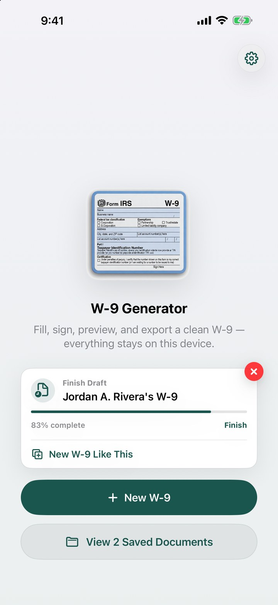
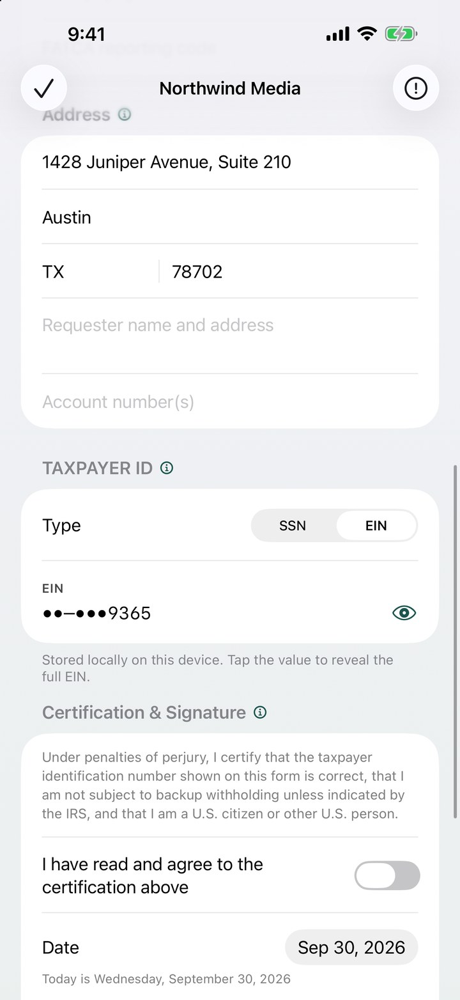
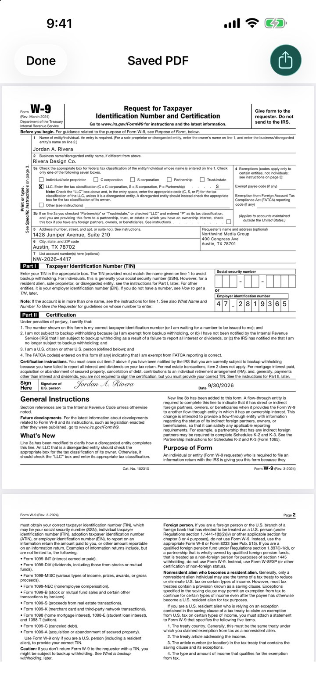
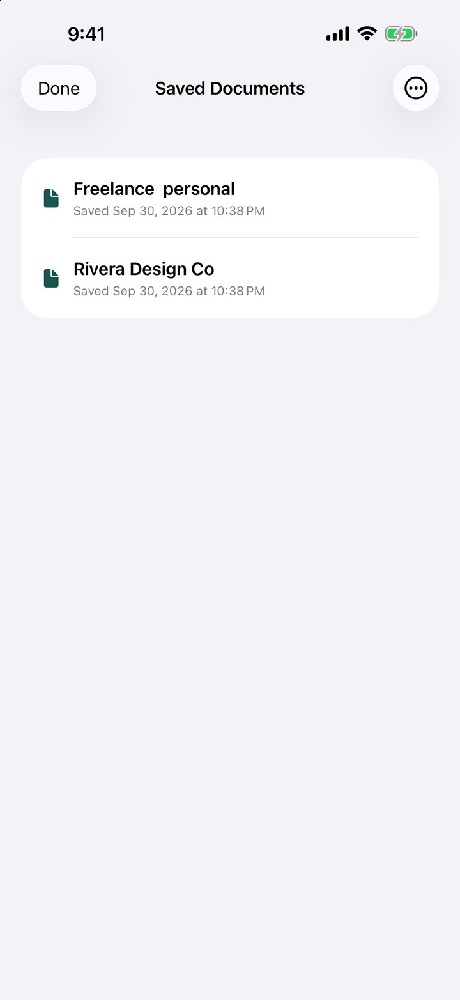
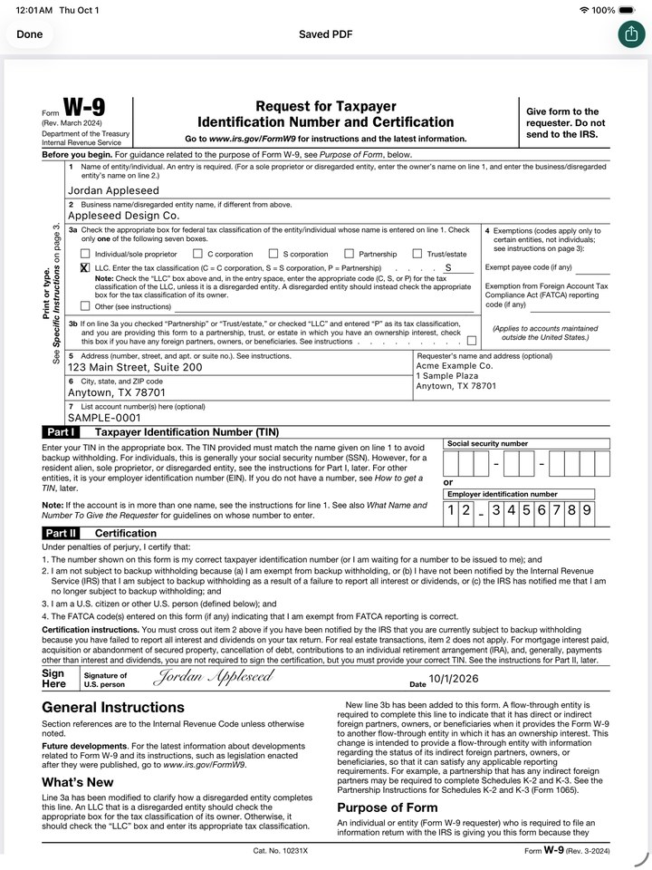

Fill out IRS Form W-9 in under two minutes.
Complete, sign and export a clean, IRS-compliant W-9 PDF straight from your iPhone or iPad. No accounts, no servers — everything stays on your device.




Pick up where you left off — or start a new W-9 from an old one.
100% on-device
Your name, address, SSN/EIN and signature never leave your phone. No accounts, no cloud, no tracking.
IRS-compliant PDF
Stamps your data into the official IRS W-9 (Rev. March 2024) and flattens the result so it can't be edited downstream.
Signature in seconds
Sign with your finger or Apple Pencil, preview the filled form, then share via Files, Email, AirDrop or Print.
See it in action
Real screens from the app — nothing staged.
Start fresh, finish a draft, or duplicate a previous W-9 in one tap.
Guided fields, with the taxpayer ID masked until you reveal it.
A clean, signed PDF on the official IRS form.
Saved documents, exportable individually or all at once.

Built for iPad, too
The same app runs full-screen on iPad, and the signature pad supports Apple Pencil with full pressure sensitivity — the closest thing to signing on paper.
How it works
- Tap New W-9 and fill in your name, business name (if any), and federal tax classification.
- Enter your address and TIN (SSN or EIN). Fields are masked while you type.
- Sign with your finger or Apple Pencil and confirm the certification.
- Preview the rendered PDF and export to Files, Email, AirDrop or Print.
Who it's for
Independent contractors, freelancers, sole proprietors, LLC owners and small-business operators who need to send a W-9 to a client or payer — without printing, scanning, or trusting their tax data to a website.
W9 Form Generator is a form-preparation tool. It does not provide tax or legal advice, and does not file anything with the IRS. Form W-9 is a public IRS form; this app uses the official IRS fillable PDF as the underlying template. For tax questions, please consult a qualified tax professional or visit irs.gov.